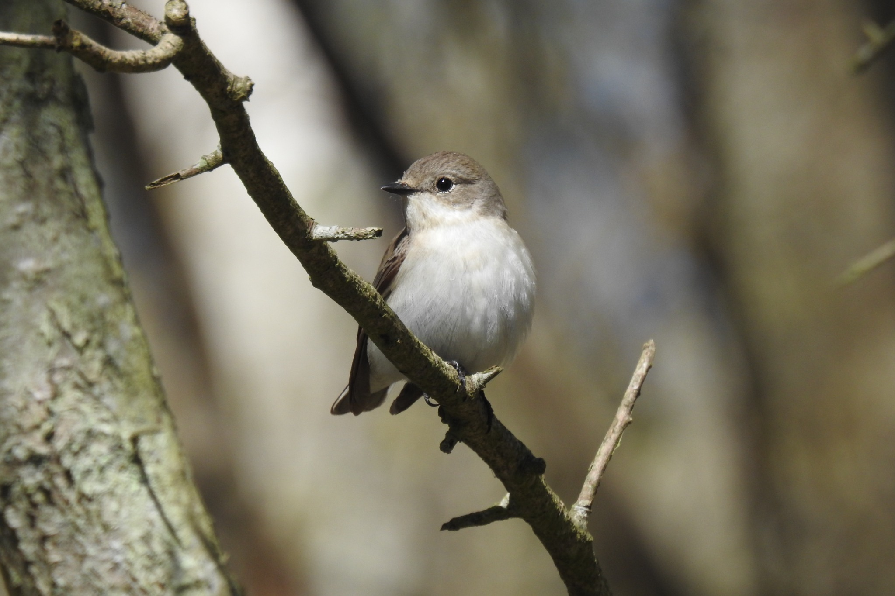

Overview
Opposite climate effects on reproductive investment and success reveal hidden consistency patterns in a migratory bird
Spring temperature and reproductive consistency in Gotland's collared flycatchers
Data, analysis workflow and results · Gotland, Sweden
Study objectives

Using long-term individual-based records of collared flycatchers (Ficedula albicollis) breeding in nest boxes on Gotland, Sweden, we examined:
- Temporal changes in mean spring temperature and its interannual variability.
- Calendar-year changes in mean reproductive performance and reproductive consistency, assessed using clutch size and egg-to-fledging success.
- Associations of spring temperature with mean reproductive performance and reproductive consistency.
- Differences between within-female and among-female temperature associations with both mean reproductive performance and reproductive consistency.
- Associations of relative laying date and female age class (yearling versus older) with these reproductive traits.
Data origin and source database: long-term Gotland breeding monitoring, the source GitHub database and SMHI weather observations.
Website structure
The analyses are organised as a scientific supplement. Each analysis chapter presents its inputs, methods, code and saved results. Complete model output is collected in S7; data documentation and reproduction instructions are provided in the appendices.
Main analysis
S1. Sliding-window analysis
Selection and validation of the pre-laying thermal window.
S2. Calendar-year analyses
Temporal changes in reproductive performance and consistency.
S3. Clutch-size models
Temperature associations with reproductive investment.
S4. Egg-to-fledging models
Temperature associations with reproductive success.
S5. Within–between temperature models
Within-female and among-female temperature associations.
S6. Model structure and diagnostics
Distributional assumptions, convergence and simulation checks.
S7. Full model summaries
Complete R output for the six reproductive models.